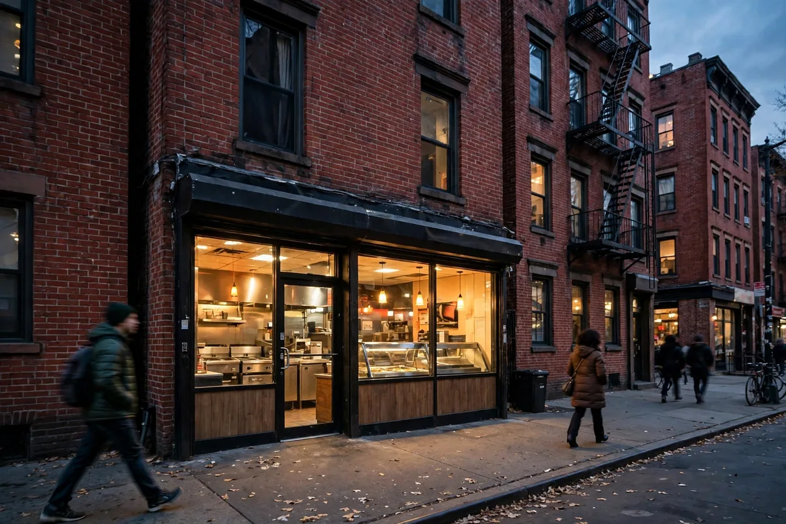
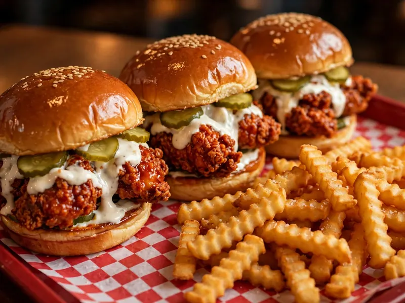
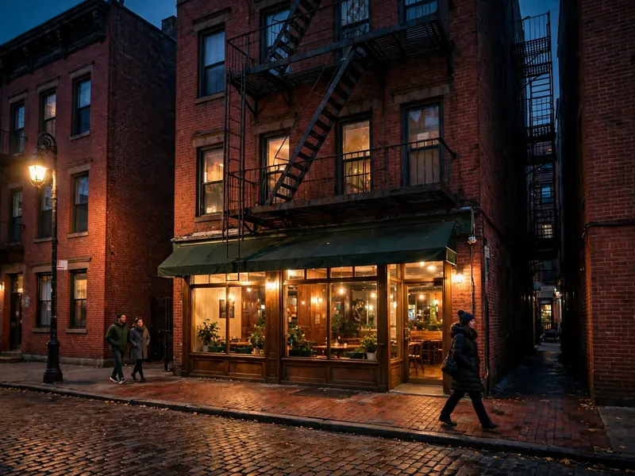

Dave's Hot Chicken Brooklyn: All Four Locations
Dave's Hot Chicken Brooklyn looks like a one-store search — until the map opens. There are four: Downtown Brooklyn, Bedford-Stuyvesant, Bay Ridge and Park Slope, and the set is split across pages (the Brooklyn page lists two, a third is filed under New York, and the fourth sits in the store locator). Here is the roundup: every Dave's Hot Chicken Brooklyn address, phone and hours table in one place, the one hours conflict flagged rather than smoothed over, and the menu, halal and delivery answers that belong with a visit.

4 locations across BrooklynLatest close: 2 AM Fri & SatAll Four Dave's Locations at a Glance
The complete set of Dave's Hot Chicken Brooklyn locations. Hours below are each store's usual pattern; the full day-by-day tables sit under each store, because the details differ in ways that matter at midnight.
| Store | Dave's Hot Chicken Brooklyn address | Phone | Usual hours |
|---|---|---|---|
| Downtown Brooklyn | 345 Adams St, Brooklyn, NY 11201 | (347) 428-0288 | 10:30 AM - 12 AM, later Thu & Fri |
| Bedford-Stuyvesant | 1192 Fulton St, Brooklyn, NY 11216 | (929) 382-9998 | 11 AM - 12 AM; 2 AM Fri & Sat |
| Bay Ridge | 418 86th St, Brooklyn, NY 11209 | (917) 967-4223 | 10:30 AM - 1 AM; 2 AM Fri & Sat |
| Park Slope | 311 7th Ave, Brooklyn, NY 11215 | See note below | See note below |
The Park Slope store stands in the locator and on its delivery storefront; its hours and phone are not confirmed on its store page, so neither is printed rather than guessed. Check the store's listing before a first trip; the other three stores below are complete.
345 Adams Street: Downtown Brooklyn
The Downtown Brooklyn store at 345 Adams St, Brooklyn, NY 11201, phone (347) 428-0288, is the one filed under the New York pages, which is why Brooklyn roundups keep missing it. Its listing shows a 4.8 rating from 731 reviews, the strongest of the Brooklyn set.
| Day | Dave's Hot Chicken Brooklyn hours, Adams St |
|---|---|
| Monday - Wednesday | 10:30 AM - 12:00 AM |
| Thursday | 10:30 AM - 1:00 AM |
| Friday | 10:30 AM - 1:00 AM |
| Saturday | 10:30 AM - 12:00 AM |
| Sunday | 10:30 AM - 12:00 AM |
One flag on this store: the hours argue with themselves about Saturday. The visible hours table (printed above) closes Saturday at midnight, while the structured data gives Friday and Saturday a 1:00 AM close. For a late Saturday trip, ring (347) 428-0288 before you set out; for every other day the two agree with the table.
1192 Fulton Street: Bedford-Stuyvesant
The Bed-Stuy store at 1192 Fulton St, Brooklyn, NY 11216, phone (929) 382-9998, opens an hour later than the rest of Brooklyn and pays it back on weekends: its 2:00 AM Friday and Saturday close is the joint-latest in the borough.
| Day | Hours |
|---|---|
| Monday - Thursday | 11:00 AM - 12:00 AM |
| Friday | 11:00 AM - 2:00 AM |
| Saturday | 11:00 AM - 2:00 AM |
| Sunday | 11:00 AM - 12:00 AM |
On delivery, this store's listings put the #2 (2 Sliders) at the top of its most-ordered list, the same favourite as Downtown Brooklyn, and show combo delivery prices in the $13.69 to $18.59 range for combos #1 to #4. Those are platform prices for delivery, and in-store prices are set by the store; use them as a guide to the shape, not the till total.

418 86th Street: Bay Ridge
The Dave's Hot Chicken Bay Ridge Brooklyn store at 418 86th St, Brooklyn, NY 11209, phone (917) 967-4223, quietly runs Brooklyn's longest standard day: a 1:00 AM close all week, stretching to 2:00 AM on Friday and Saturday, per its listing data.
| Day | Hours |
|---|---|
| Sunday - Thursday | 10:30 AM - 1:00 AM |
| Friday - Saturday | 10:30 AM - 2:00 AM |
Bay Ridge is the store the Brooklyn roundups forget twice over: it sits at the borough's south-western edge, far from the other three, and it is the natural Dave's for the Bay Ridge, Dyker Heights and Bensonhurst side of Brooklyn rather than a trip across the borough to Adams or Fulton.
311 7th Avenue: Park Slope
The fourth store, the Dave's Hot Chicken Brooklyn 7th Ave location at 311 7th Ave, Brooklyn, NY 11215, is the one hiding in plain sight: it sits in Dave's official store locator and runs a delivery storefront, yet appears on neither the official Brooklyn city page.
Its address is confirmed two ways; its hours and phone are not confirmed on the 7th Ave store page, so neither is printed: a guessed phone number helps no one. Its delivery storefront takes orders today, and the store's listing carries the current hours. This store still floats as new in places, its opening date long past; that is the residue of its quiet arrival: all four Brooklyn stores, this one included, are open and trading now, and no Brooklyn store is at the opening stage anymore.
Brooklyn Hours Compared: Earliest, Latest, Late Night
Across the four stores, Dave's Hot Chicken Brooklyn hours split cleanly: Adams, Bay Ridge and (by its delivery window) Park Slope trade the standard Dave's pattern, while Fulton runs its own later clock.
10:30 AM at Adams St and 86th St. Fulton follows at 11:00 AM. Nobody in Brooklyn opens at 9 or 10; a Dave's breakfast run is not a thing here.
2:00 AM on Friday and Saturday at two stores: Fulton St and 86th St. On weeknights Bay Ridge's 1:00 AM close is the borough's latest, with Adams reaching 1:00 AM on Thursday and Friday per its visible table.
After midnight, your Brooklyn options narrow to Bay Ridge every night, Fulton on weekends, and Adams on Thursday and Friday. Sunday to Wednesday, 86th Street is the only Dave's in Brooklyn still frying past twelve.

Chain-wide, there is no single Dave's schedule to memorise instead; the general hours guide on this site shows opens between 9 and 11 AM and closes from 11 PM to 3 AM depending on the store, and Brooklyn sits squarely in that pattern.
Is Dave's in Brooklyn Halal?
The Brooklyn stores serve halal chicken, and the Adams Street and 86th Street listings both carry the Halal Restaurant category, the basis for the Dave's Hot Chicken Brooklyn halal searches.
No certifier is named and no slaughter method is published for the U.S., so the Brooklyn position is the chain's U.S. position: halal chicken served, certification unpublished. The full picture, including the U.K.'s certified-supplier position and how to verify at your store in four steps, is in the halal guide. The same chain-answer logic covers the other Brooklyn searches: Dave's Hot Chicken Brooklyn calories and nutrition figures are the chain's chart (see the nutrition guide), the Dave's Hot Chicken Brooklyn gluten free and allergen menu answers are the chain's cautious ones (see those guides), the vegetarian line is the cauliflower NOT Chicken range while nothing is certified vegan, the spice levels are the standard seven, the gift card and rewards programs work at Brooklyn stores as they do chain-wide, and the secret menu post covers the hacks New York orders too.
Note: addresses, phones, hours and the halal position are the location pages' and the locator's, November 2026; the Bay Ridge hours are its listing data, the Adams Saturday conflict is flagged in place, and Park Slope's hours and phone are withheld until its store page can be read directly.
Frequently Asked Questions
How many Dave's Hot Chicken locations are in Brooklyn?
Four: 345 Adams St in Downtown Brooklyn (11201), 1192 Fulton St in Bedford-Stuyvesant (11216), 418 86th St in Bay Ridge (11209) and 311 7th Ave in Park Slope (11215). The set is split up: the Brooklyn page lists two, Adams is filed under New York, and 7th Ave sits in the store locator.
What is the Dave's Hot Chicken Brooklyn address?
There are four: 345 Adams St, Brooklyn, NY 11201; 1192 Fulton St, Brooklyn, NY 11216; 418 86th St, Brooklyn, NY 11209; and 311 7th Ave, Brooklyn, NY 11215. Phones: Adams (347) 428-0288, Fulton (929) 382-9998, Bay Ridge (917) 967-4223. The Park Slope phone is not printed here because its official store page could not be verified for this guide.
Which Brooklyn Dave's is open latest?
On Friday and Saturday, Fulton St and 86th St both close at 2:00 AM. On weeknights, Bay Ridge (86th St) closes latest at 1:00 AM, and it is the only Brooklyn store open past midnight from Sunday to Wednesday. Adams St reaches 1:00 AM on Thursday and Friday per its visible hours table.
What are Dave's Hot Chicken Brooklyn hours?
Adams St: 10:30 AM to 12 AM, to 1 AM Thursday and Friday. Fulton St: 11 AM to 12 AM, to 2 AM Friday and Saturday. 86th St: 10:30 AM to 1 AM, to 2 AM Friday and Saturday. Park Slope (7th Ave): check the store's listing; its hours are not confirmed, so they are not guessed here.
Is Dave's Hot Chicken in Brooklyn halal?
The Brooklyn stores serve halal chicken, and the Adams St and 86th St listings carry the Halal Restaurant category. No U.S. certifier or slaughter method is published for these stores; the halal guide covers the full position, chain-wide.
Does Dave's Hot Chicken Brooklyn deliver?
Yes, through the delivery platforms each store lists on: DoorDash carries the Adams St and Fulton St stores, Caviar the 7th Ave store, and Postmates the 86th St store, among others. Delivery prices run above in-store prices (Fulton lists combos at $13.69 to $18.59 on the platform), and rewards points do not apply to third-party delivery orders.
Why does the official Brooklyn page show only two stores?
Because Dave's files its stores under different city pages: the official Brooklyn page lists 418 86th St and 1192 Fulton St, the 345 Adams St store sits under the official New York page, and 311 7th Ave appears in the store locator and on delivery platforms. All four are real, open Brooklyn stores; the filing is just untidy.
What is on the Dave's Hot Chicken Brooklyn menu?
The full chain menu: tenders, sliders, Dave's Bites, the NOT Chicken cauliflower line, fries, mac and cheese, kale slaw and shakes, at seven spice levels from Not Hot to Reaper. The #2 (2 Sliders) is the most-ordered item on delivery at both the Adams St and Fulton St stores.
More Dave's Guides
Browse the rest of the Dave's guides.